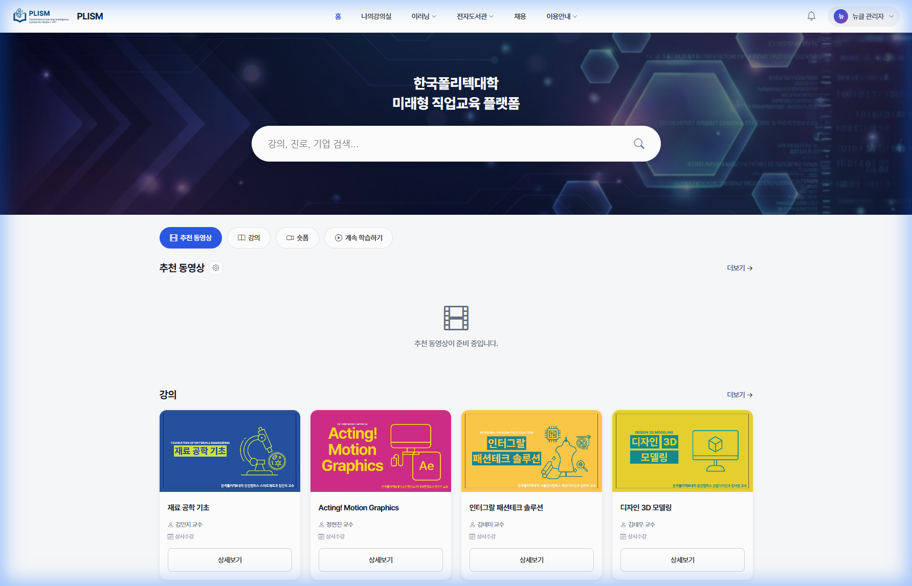
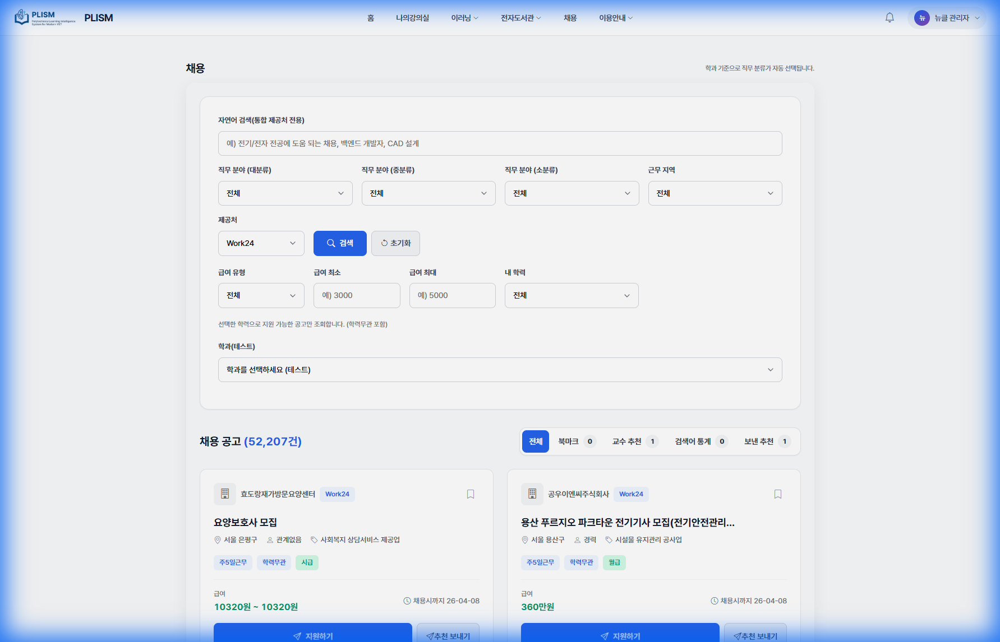
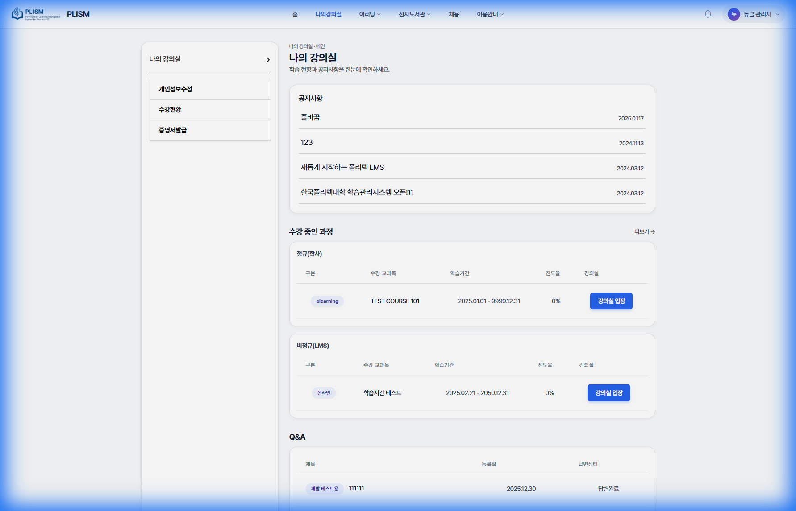

3. 메인 페이지
메인 페이지는 PLISM 플랫폼의 시작점으로, 학습에 필요한 모든 기능에 접근할 수 있습니다.

📸 메인 페이지 - 검색, 콘텐츠 탭(추천 동영상/강의/숏폼/계속 학습하기), 강의 카드
3.1 검색 기능
페이지 상단의 히어로 영역에는 통합 검색 기능이 있습니다.
📌 콘텐츠 검색 방법
- 메인 페이지 상단의 검색창을 찾습니다.
- 검색어를 입력합니다 (예: 강의명, 기업명, 직무 등).
- Enter 키를 누르거나 돋보기 아이콘을 클릭합니다.
- 검색 결과 페이지에서 원하는 콘텐츠를 선택합니다.
3.2 상단 네비게이션
| 메뉴 |
기능 |
| 홈 |
메인 페이지로 이동 |
| 나의강의실 |
수강 중인 과목 목록 및 학습 관리 |
| 이러닝 |
폴리텍 콘텐츠, 개설과목, 프리클래스 하위 메뉴 |
| 전자도서관 |
교보문고, YES24 전자책 등 전자도서관 링크 |
| 채용 |
학과 맞춤 채용정보 페이지 |
| 이용안내 |
매뉴얼 등 이용안내 하위 메뉴 |
3.3 콘텐츠 탭
메인 콘텐츠 영역에는 4가지 탭으로 구분된 콘텐츠가 표시됩니다.
| 탭 |
내용 |
| 추천 동영상 |
AI가 분석한 맞춤형 학습 동영상 추천 |
| 강의 |
현재 운영 중인 강좌 목록 |
| 숏폼 |
YouTube 채널의 짧은 교육 영상 |
| 계속 학습하기 |
수강 중인 과목 이어보기 (로그인 필요) |
원하는 탭을 클릭하면 해당 섹션으로 스크롤되어 바로 이동합니다.
4. 추천 동영상
AI 기반 추천 시스템이 학생의 관심사와 학습 이력을 분석하여 맞춤형 동영상을 추천합니다.
📸 추천 동영상 탭 - 메인 페이지의 '추천 동영상' 탭과 설정 아이콘(⚙️), 더보기 링크 확인
4.1 추천 목록 보기
📌 추천 동영상 확인 방법
- 메인 페이지에서 [추천 동영상] 탭을 클릭합니다.
- 카드 형태로 표시되는 추천 동영상 목록을 확인합니다.
- 각 카드에는 썸네일, 제목, 카테고리 정보가 표시됩니다.
- [더보기 →]를 클릭하면 전체 추천 목록을 볼 수 있습니다.
4.2 추천 설정 변경
나만의 추천 기준을 설정하여 더 정확한 추천을 받을 수 있습니다.
📌 추천 설정 변경 절차
- 추천 동영상 섹션의 제목 옆 ⚙️ (설정) 아이콘을 클릭합니다.
- 추천 설정 모달창이 나타납니다.
- 관심 분야나 원하는 추천 기준을 자연어로 입력합니다.
예시: "전기/전자 전공에 도움이 되는 취업 준비 영상 추천해줘"
- [저장] 버튼을 클릭하여 설정을 완료합니다.
- 새로고침 후 변경된 추천 기준이 적용됩니다.
추천 설정은 언제든지 변경할 수 있으며, [초기화] 버튼으로 기본값으로 되돌릴 수 있습니다.
4.3 영상 미리보기
📌 영상 미리보기 방법
- 원하는 동영상 카드 위의 재생 버튼 또는 썸네일을 클릭합니다.
- 새 팝업 창에서 영상이 재생됩니다.
- [미리보기] 버튼을 클릭해도 동일하게 재생됩니다.
- 팝업 창을 닫으면 메인 페이지로 돌아옵니다.
5. 강의 탐색
다양한 분야의 온라인 강좌를 탐색하고 수강신청할 수 있습니다.
📸 강의 카드 목록 - 썸네일, 강좌명, 교수명, 상세보기 버튼이 표시됩니다
5.1 강의 목록
📌 강의 목록 확인 방법
- 메인 페이지에서 [강의] 탭을 클릭합니다.
- 현재 운영 중인 강좌들이 카드 형태로 표시됩니다.
- 각 카드에는 다음 정보가 표시됩니다:
- [더보기 →]를 클릭하면 전체 강좌 목록으로 이동합니다.
5.2 강의 상세정보
📌 강의 상세 확인 절차
- 원하는 강좌 카드에서 [상세보기] 버튼을 클릭합니다.
- 강좌 상세 페이지로 이동합니다.
- 다음 정보를 확인할 수 있습니다:
- 강좌 소개 및 목표
- 커리큘럼(주차별 학습 내용)
- 담당 교수 정보
- 교육 기간 및 수강 정원
- 평가 방법
5.3 수강신청
📌 수강신청 절차
- 강좌 상세 페이지에서 [수강신청] 버튼을 클릭합니다.
- 로그인이 되어 있지 않으면 로그인 화면이 나타납니다.
- 수강신청 확인 메시지를 확인합니다.
- [확인]을 클릭하여 신청을 완료합니다.
- 신청이 완료되면 "나의 강의실"에서 해당 강좌를 확인할 수 있습니다.
정규 과목(학사 연동)은 별도의 학사 시스템을 통해 수강신청해야 합니다.
10. 채용정보
학과에 맞는 채용 공고를 확인할 수 있는 맞춤형 채용정보 서비스입니다.

📸 채용정보 페이지 - 자연어 검색, 직무 분류 필터, 채용 공고 카드
📌 채용정보 확인 방법
- 상단 메뉴에서 [채용]을 클릭합니다.
- 채용정보 페이지로 이동합니다.
- 로그인한 경우, 소속 학과에 맞는 직무가 자동으로 선택됩니다.
- 필터를 사용하여 원하는 조건의 채용 공고를 검색합니다.
- 관심 있는 공고를 클릭하여 상세 내용을 확인합니다.
로그인 상태에서는 학과 정보를 기반으로 관련 채용 공고가 우선 표시됩니다.
11. 나의 강의실
로그인 후 "나의강의실"에서 수강 중인 과목과 학습 현황을 관리할 수 있습니다.
강의실에 입장하여 동영상 수강, 과제 제출, 시험 응시 등 모든 학습 활동을 진행합니다.

📸 나의 강의실 - 공지사항, 수강 중인 과정(정규/비정규), 진도율, 강의실 입장 버튼
11.1 수강 과목 확인
📌 수강 과목 확인 방법
- 상단 메뉴에서 [나의강의실]을 클릭합니다.
- 로그인하지 않은 경우 로그인 페이지로 이동합니다.
- 수강 중인 과목 목록이 표시됩니다.
- 각 과목별로 다음을 확인할 수 있습니다:
- 과목명 및 년도/학기 정보
- 교육 기간
- 진도율 (프로그레스 바)
- 성적 (공개된 경우)
- 과목을 클릭하여 강의실에 입장합니다.
11.2 강의실 입장 및 구성
강의실은 과목별로 모든 학습 활동이 이루어지는 공간입니다.
| 영역 |
기능 |
| 공지사항 |
교수자가 등록한 과목 공지 확인 |
| Q&A |
질문 등록 및 답변 확인 |
| 과제/시험 |
제출해야 할 과제와 시험 일정 목록 |
| 강의목차 |
차시별 학습 콘텐츠 및 진도 현황 |
11.3 동영상 강의 수강
📌 동영상 학습 방법
- 강의실 메인에서 강의목차 영역을 확인합니다.
- 수강하고자 하는 차시의 [학습하기] 버튼을 클릭합니다.
- 동영상 플레이어가 새 창에서 열립니다.
- 영상을 끝까지 시청하면 해당 차시가 "완료"로 표시됩니다.
- 학습 현황(학습 시간, 완료 여부)은 자동으로 저장됩니다.
숏폼 보기: 일부 차시에는 숏폼(짧은 요약 영상) 버튼이 있어 핵심 내용을 빠르게 복습할 수 있습니다.
순차학습이 설정된 과목은 이전 차시를 완료해야 다음 차시를 수강할 수 있습니다.
11.4 과제 제출 및 피드백 확인
📌 과제 제출 방법
- 강의실 좌측 메뉴에서 [과제]를 클릭합니다.
- 과제 목록에서 제출할 과제의 [바로가기] 버튼을 클릭합니다.
- 과제 내용을 확인하고 답변을 작성합니다.
- 필요한 경우 파일을 첨부합니다.
- [제출] 버튼을 클릭하여 과제를 제출합니다.
| 상태 |
설명 |
| 대기 |
아직 제출 기간이 시작되지 않음 |
| 미제출 |
제출 기간 중이나 아직 제출하지 않음 |
| 제출 |
과제 제출 완료 |
| 채점중 |
교수자가 채점 진행 중 |
| 종료 |
제출 기간 마감 |
📌 피드백 확인 방법
- 과제 목록에서 제출한 과제를 클릭합니다.
- 과제 상세 페이지에서 점수와 채점 점수를 확인합니다.
- 교수자가 작성한 코멘트(피드백)가 있으면 함께 표시됩니다.
11.5 시험 응시
📌 시험 응시 방법
- 강의실 좌측 메뉴에서 [시험]을 클릭합니다.
- 응시 가능한 시험의 [응시하기] 버튼을 클릭합니다.
- 시험 안내를 확인하고 [시험 시작]을 클릭합니다.
- 문제를 풀고 정답을 선택/입력합니다.
- 모든 문제를 풀면 [제출] 버튼을 클릭합니다.
- 제출 확인 메시지에서 [확인]을 클릭하여 최종 제출합니다.
시험 중에는 페이지를 벗어나지 마세요. 중간에 이탈하면 응시 기록에 영향을 줄 수 있습니다.
📌 성적 확인
- 시험 목록에서 응시 완료된 시험을 클릭합니다.
- 성적 공개가 설정된 경우 점수를 확인할 수 있습니다.
- 오답 공개가 설정된 경우 틀린 문제를 확인할 수 있습니다.
11.6 Q&A 질문하기
📌 질문 등록 방법
- 강의실 좌측 메뉴에서 [Q&A]를 클릭합니다.
- [글쓰기] 버튼을 클릭합니다.
- 제목과 내용을 입력합니다.
- 필요한 경우 파일을 첨부합니다.
- [등록] 버튼을 클릭하여 질문을 게시합니다.
교수자 답변이 등록되면 Q&A 목록에서 확인할 수 있습니다. 알림이 설정된 경우 이메일로도 안내됩니다.
11.7 수료증 발급
과정을 수료하면 수료증을 다운로드할 수 있습니다.
📌 수료증 발급 방법
- 나의강의실에서 수료 완료된 과목을 찾습니다.
- 과목 정보 영역에서 [수료증] 또는 [증명서] 버튼을 클릭합니다.
- 수료증 미리보기 화면이 나타납니다.
- [저장] 버튼을 클릭하여 PDF로 다운로드합니다.
- 또는 [인쇄] 버튼을 클릭하여 바로 출력합니다.
수료 조건(진도율, 시험 점수 등)을 충족해야 수료증이 발급됩니다. 미수료 상태에서는 수료증 버튼이 비활성화됩니다.
11.8 정보 수정
📌 개인정보 수정 방법
- 우측 상단의 프로필 영역에 마우스를 올립니다.
- 드롭다운 메뉴에서 [정보수정]을 클릭합니다.
- 개인정보 수정 페이지로 이동합니다.
- 수정이 필요한 정보를 변경합니다.
- [저장] 버튼을 클릭하여 변경사항을 저장합니다.
비밀번호 변경 시 현재 비밀번호를 정확히 입력해야 합니다.